声明
本文所介绍的插件，都是本站用过、在用、或者改善过的，并非简单搬运。
因为好用，所以推荐给大家，请放心食用。
Jetpack （WP怪兽级插件）
国外最推荐的插件没有之一，国内最不推荐的插件没有之一。
JetPack插件是WordPress社区官方出品的怪兽级插件，这个插件里面集成了30个左右的网站常用的辅助功能，比如网站统计，社交分享，安全管理，邮件发送，自定义评论，拼写检查，CDN加速，移动版主题支持等等。
可以理解为：JetPack插件等于30个左右独立的插件，这30个左右的功能，都有独立的开关控制。不过，如果WordPress站点服务器在国内，别用JetPack插件，想都不要想。
这是因为JetPack插件的许多功能，都需要链接wordpress.com这个网站的服务器，而wordpress.com在墙外已经很多年了。
JetPack插件可以说是云插件，许多功能要链接到云端服务器才能完成。站点服务器在国外的话，连接wordpress.com就应该没有问题的，这时可以使用JetPack插件。但是如果站点服务器是面向国内的，JetPack插件就无法使用了，而且可能会因为访问wordpress.com超时而拖垮整个站点的访问效率。
Yoast-Complete-SEO （搜索引擎优化工具）
很强悍的SEO优化插件，在国外非常流行，据说超过25%的站点都在使用它提高搜索排名。但是在国内还是要慎用，此插件有部分功能可能要访问国外IP，启用后明显感觉到网站打开速度变慢。
此插件包解压即用，所有功能都被破解，但不能登录不能升级，不然就无法再用了。其内集合了5个插件，一般网站主要安装前2个即可：
- ① wpseo-local：基础包
- ② wordpress-seo-premium：专业包
- ③ wpseo-news：非新闻站点可不安装
- ④ wpseo-video：非视频站点可不安装
- ⑤ wpseo-woocommerce：非社交站点可不安装
优化项目包括但不限于：
- ① 标题&元标记： 可以进行首页、分类、文章、页面的标题、描述、关键字的设置
- ② 社会化： 只有Facebook，所以国人可以忽视这个
- ③ XML站点地图： 开启XML站点地图功能，可以不用 Google XML Sitemaps 插件了
- ④ 固定链接： 去除分类目录URL中的默认结构（通常是/category/），可以删除 WP No Category Base 插件了；重定向附件URL到其附加的文章页面
- ⑤ 内部链接： 就是面包屑导航
- ⑥ RSS： 可自动在你的RSS中添加内容。更确切地说，这意味着可以给你的网站和文章添加反向链接。当采集器也这么做，就帮助搜索引擎识别你是原创作者。
- ⑦ WordPress SEO by Yoast 一个比较值得称赞的是文章发布时，有一个SEO检测功能，能够对当前文章进行检测并给出改善的建议
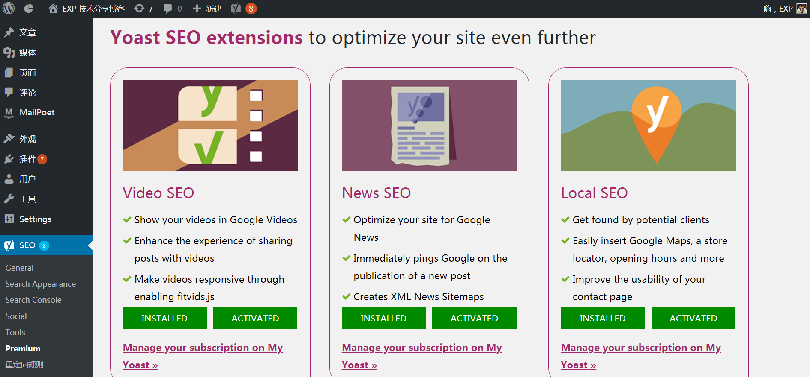
WP Editor.md （WP专用的Markdown）
写博客必备，在WordPress平台中最好的Markdown插件，没有之一。
特色：
- ① 支持基本的Markdown语法
- ② 支持KaTex/Latex数学公式语法（Latex语法文档下载）
- ③ 支持即时截图并黏贴插入
- ④ 支持生成toc目录 （需安装配套插件 Table of Contents Plus）
- ⑤ 支持在评论使用Markdown（需安装配套插件 WP Product Review Lite）
- ⑥ 支持实时预览
- ⑦ 支持文章分页
- ⑧ 支持代码语法高亮（这个功能不好看，下面用CSH插件补足）
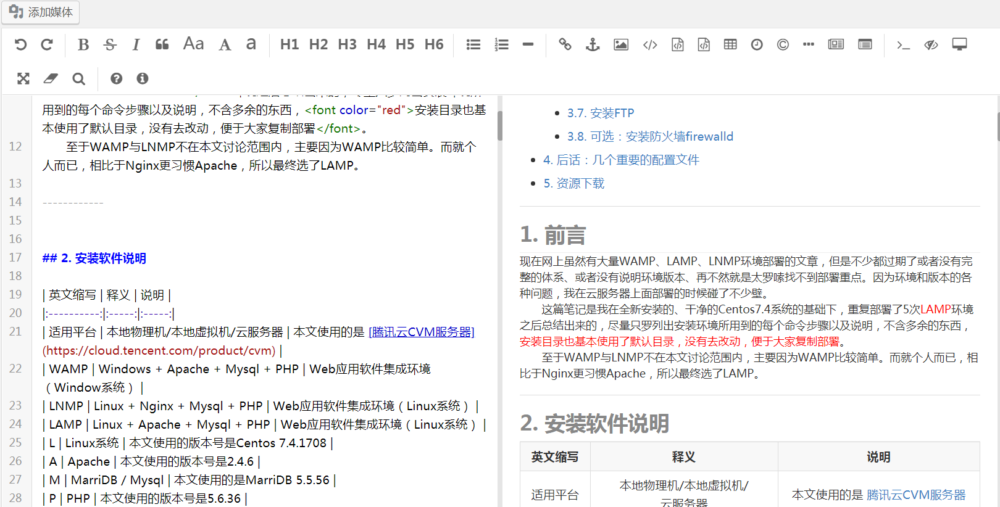
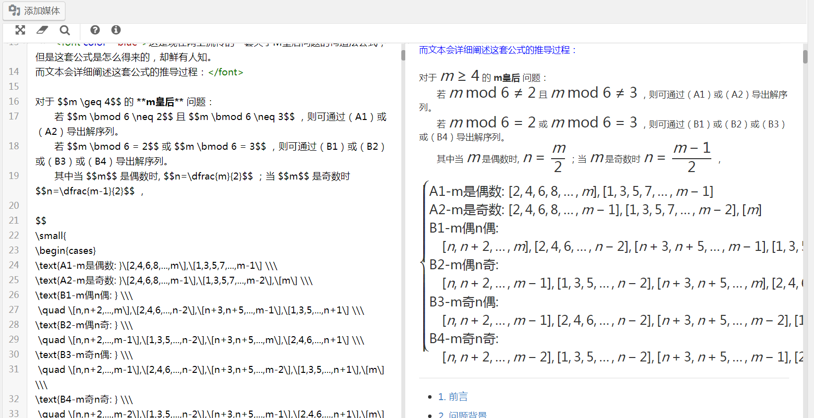
注意：
WP Editor.md 的 KaTex/Latex 功能需要使用CDN加速，不同地域需要设置不同的CDN服务器。
当发现 KaTex/Latex 公式无法显示时，打开F12控制台日志看见如下图的404异常，则说明是CDN服务器异常。
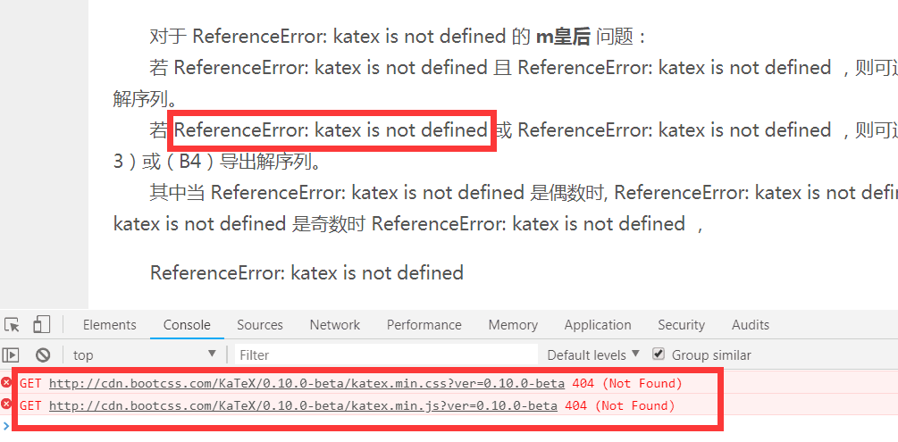
此时通过 WP Editor.md -> 常规设置 修改CDN路线，直到 KaTex/Latex 公式可以生效即可。
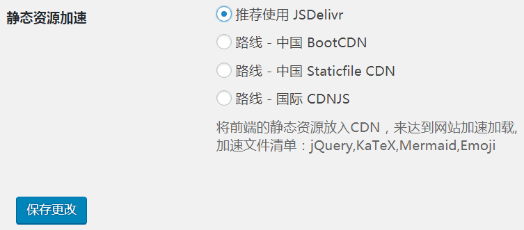
Crayon Syntax Highlighter （Crayon语法显示）
程序员必备，在WordPress平台中最好的语法高亮插件，没有之一。
特色：
- ① 内置多种代码的语法高亮风格
- ② 支持行号显示
- ③ 支持源码查看
- ④ 支持双击复制
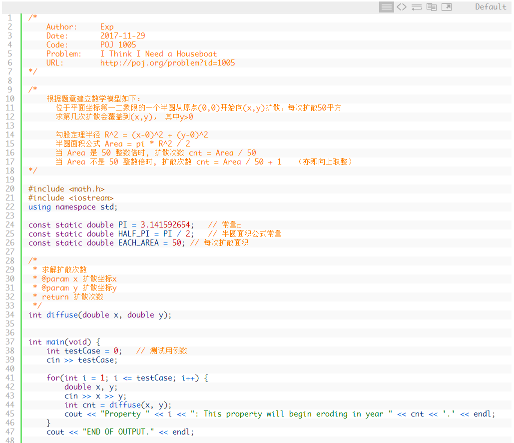
注意：这个插件的默认配置与 WP Editor.md 有冲突，在显示代码时会把代码中的html变成转义字符。
造成此问题的原因是：在后台编辑框中提交的文本被保存到数据库中，在前台展示时才会经过Markdown转码。但是做的是先由Markdown根据语法转码后交由Crayon Syntax Highlighter进行代码高亮的渲染。而Markdown会将代码中的特殊符号经由HTML进行转义，而Crayon Syntax Highlighter会原封不动地显示<pre>标签中的代码，于是转义过后的代码就被原封不动地展示出来了。
为了解决此问题，Crayon Syntax Highlighter必须在渲染时将转义过后的代码再转义回来，设置选项如下（修改配置后，受影响的文章可能需要重新提交才能生效）：
如下图勾选这两个选项：
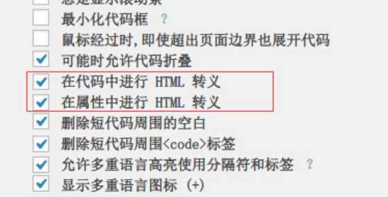
如下图取消这两个选项：
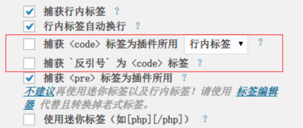
WP Statistics （WP统计器）
在WordPress平台中最强大的统计插件，没有之一。
支持统计内容：
- ◇ 在线用户
- ◇ 今天的访问
- ◇ 今天的访问
- ◇ 昨日访问
- ◇ 昨日访客
- ◇ 过去一周的访问量
- ◇ 过去一个月的访问量
- ◇ 过去一年的访问量
- ◇ 累计访问
- ◇ 累计访客
- ◇ 页面访问总数
- ◇ 搜索引擎引用次数
- ◇ 总计文章
- ◇ 总计页面
- ◇ 总计回响
- ◇ 总计垃圾
- ◇ 总计用户
- ◇ 平均文章
- ◇ 平均评论
- ◇ 平均用户
- ◇ 最后发表日期
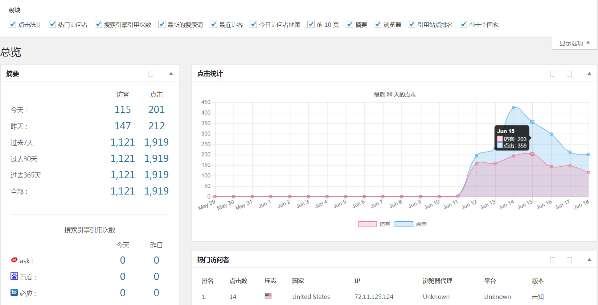
WP-PostViews （文章阅读次数统计器）
当你所使用的站点主题不能对每篇文章的阅读数进行单独统计时，此插件可以补全此功能。
此插件要求站长具备一定的编程能力，因为它不能仅仅单纯在前端配置就生效，而是需要同时修改主题的php文件代码，在希望它出现的地方嵌入代码。
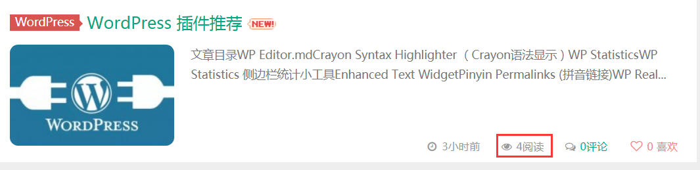
WP-PostRatings （文章评分器）
当你所使用的站点主题不能对每篇文章的进行单独打分时，此插件可以补全此功能。
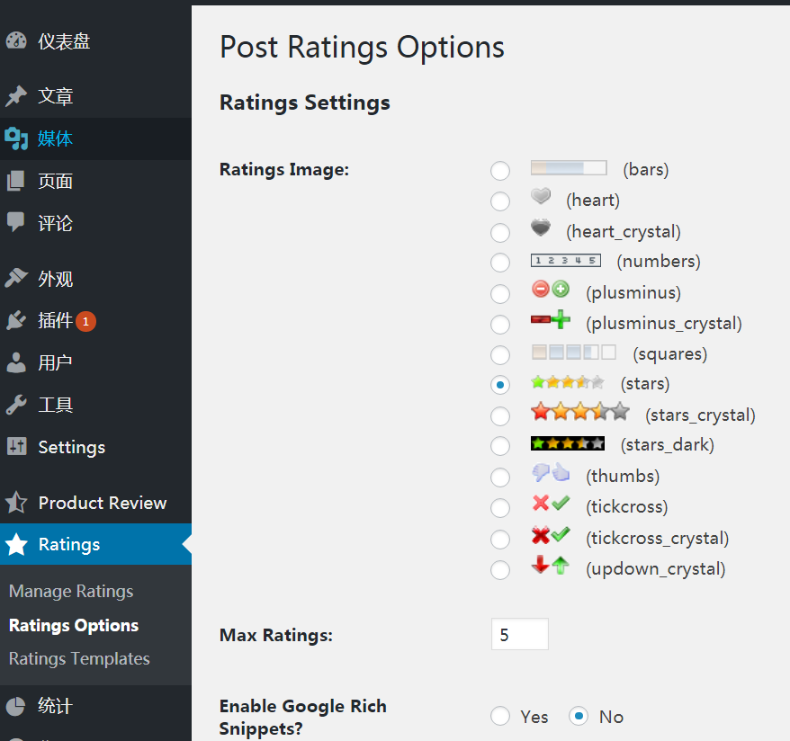
Enhanced Text Widget （文本小工具强化插件）
此插件功能与WordPress自带的小工具【自定义HTML】类似。
不过此插件支持PHP代码，在编写小工具的时候更灵活。
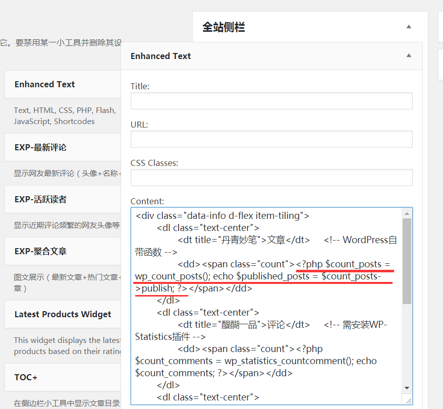
Pinyin Permalinks （拼音链接）
WordPress在新建页面/文章的时候，默认会使用标题作为固有链接，但是如果标题含中文或其他特殊字符，会引起页面无法访问的问题。
此插件会自动把非英文字符自动转换（可配置只转换成首字母而非全拼）
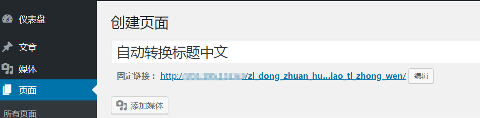
不过个人更倾向使用原生的自定义固有链接，使用文章ID更好看：
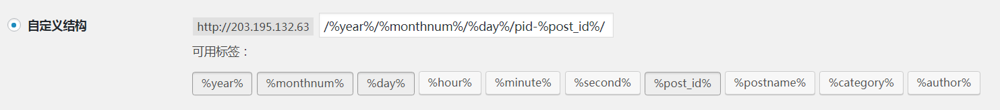
WP Real Media Library （媒体库管理器）
此插件可以对上传的附件进行自定义分类，而不必都放到一个文件夹内。
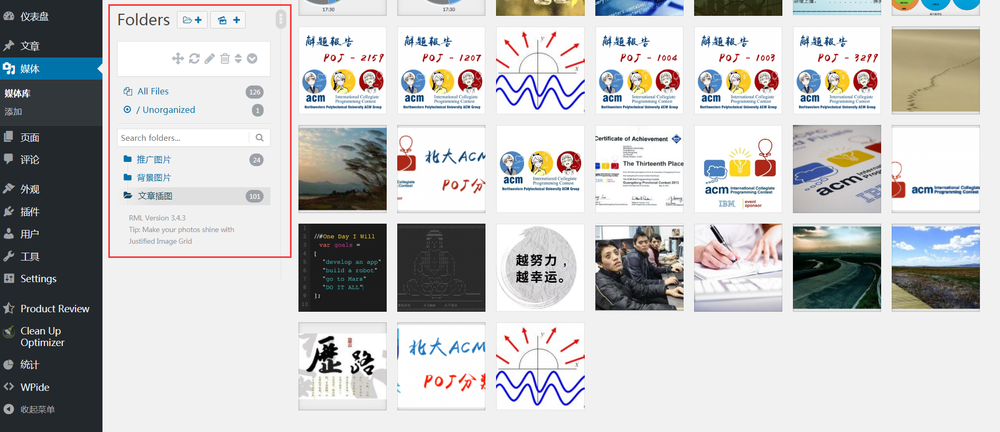
WPide （WP在线代码编辑器）
此插件可在HTTP前端的WordPress后台直接编辑主题、插件代码。
若你租用的只是建站主机而非云服务器，无法登陆操作系统后台，那么这款插件就很适用了（即使可以登陆操作系统后台，这款插件也可以很方便地在页面修改主题、插件代码）。
特色：
- ① 支持代码高亮
- ② 支持行号显示
- ③ 支持语法校验
- ④ 支持层级目录架构管理
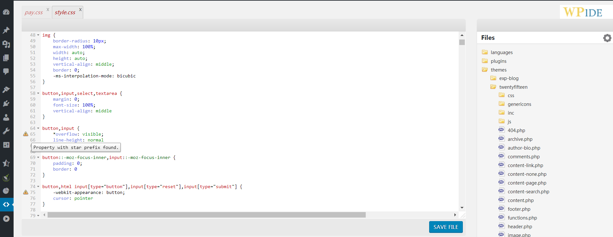
Batch Cat （文章分类批量修改器）
强迫者的福音，当你网站的文章非常多，需要重新整理分类的时候，就用得着了。平时不用的时候可以不启用此插件。
这个插件是直接修改数据库的，比WordPress自带的批量更新文章要强大。而且WordPress原生的批量更新有个BUG，只能加批量分类，无法批量删分类。
特色：
- ① 支持批量添加文章分类
- ② 支持批量修改文章分类
- ③ 支持批量删除文章分类
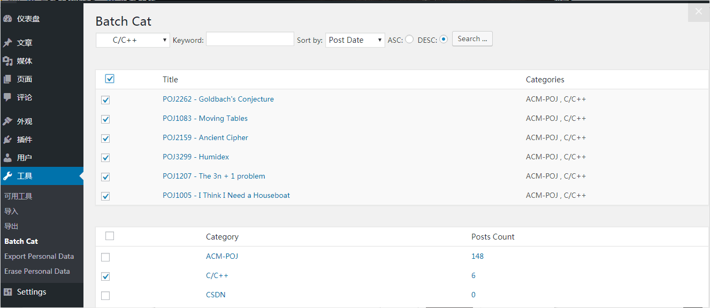
WP Clean Up Optimizer （数据库清理优化器）
由于WordPress每次更新文章，都会复制一个文章副本版本，严重浪费数据库资源。
此插件可在HTTP前端的WordPress后台优化、清理数据库垃圾。
若你租用的只是建站主机而非云服务器，无法登陆操作系统后台数据库，那么这款插件就很适用了（即使可以登陆操作系统后台数据库，这款插件也可以避免在数据库的误操作）。
特色：
- ① 支持手动清理数据库垃圾
- ② 支持计划/定时清理数据库垃圾
- ③ 支持数据库优化
- ④ 可避免误删数据库数据
注：
这个插件有一个严重的BUG，它会自动记录所有最近尝试登陆的行为到wp_clean_up_optimizer_meta表
而每次打开WP前台/后台时，它都会第一时间去查这张表
而这张表随着时间推移会越来越大，直接导致的问题就是打开WP站点时 TTFB 越来越长（即页面很久才显示）
实测当这张表有4000条数据时，页面打开时间已经高达6秒以上
因此建议平时将此插件停用，仅才清理时才启用
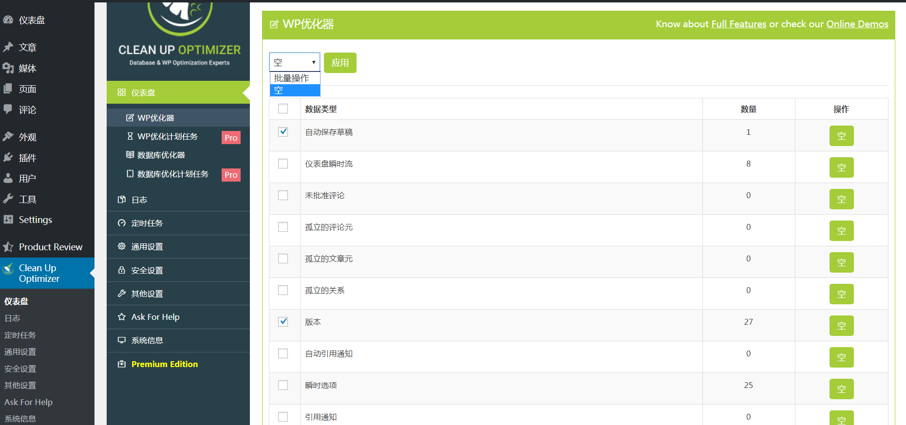
WP Database Backup （WP数据库备份）
用于自动备份WP数据库的插件，方便易用。
特色：
- ① 支持周期备份
- ② 支持控制备份数量
- ③ 支持在线恢复备份
- ④ 支持备份下载
- ⑤ 支持备份通知
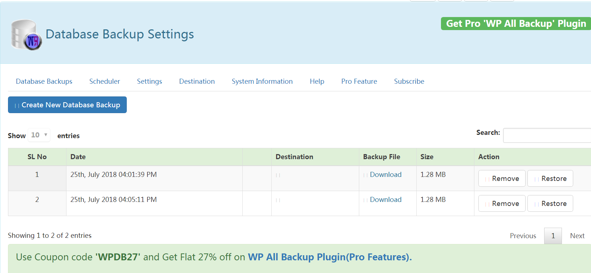
Limit Login Attempts Reloaded （限制登录重试插件）
当WordPress站点上线一段时间后，你会发现开始有那么一堆（对的不是几个是一堆）机器人在试图通过admin、administrator、或者你的域名去登录你的WordPress后台：
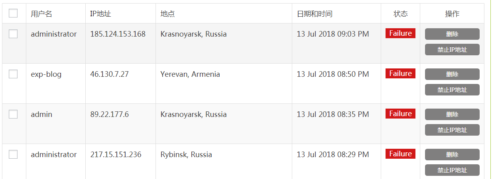
先不论你的站点密码有多强悍，单是这种无耻的暴力破解密码行为就会给站点服务器带来额外负担。
这个时候这个插件就很有用了，它可以设定允许重试多少次登陆密码，超过次数就对IP进行冻结，甚至永久封印：
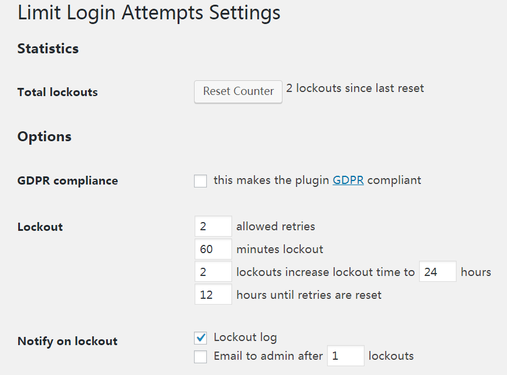
Stealth Login Page （隐形登陆插件）
为登陆页面增加验证码，当验证码输入错误时，跳转到指定页面。
配合前一个插件 Limit Login Attempts Reloaded 一起使用可有效防止机器人暴力破解站点密码：
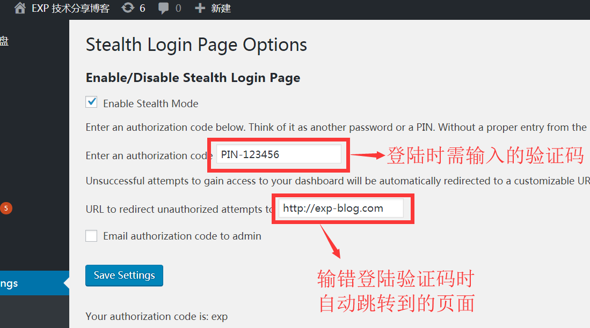
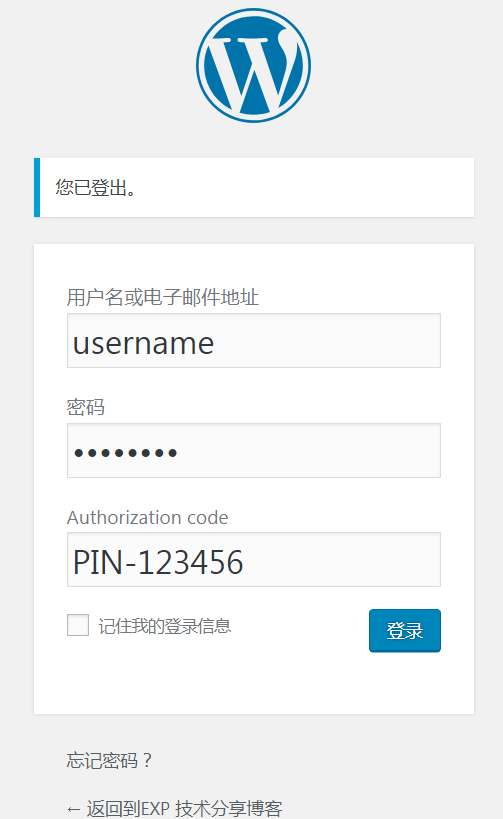
WP Ban （访问限制插件）
可以很方便地为你的站点设置一个黑名单列表，禁止机器人、非法用户的访问。
特色：
- ① 支持IP封禁
- ② 支持IP段封禁
- ③ 支持IP范围封禁
- ④ 支持主机封禁
- ⑤ 支持域名封禁
- ⑥ 支持User Agent封禁（防爬虫）
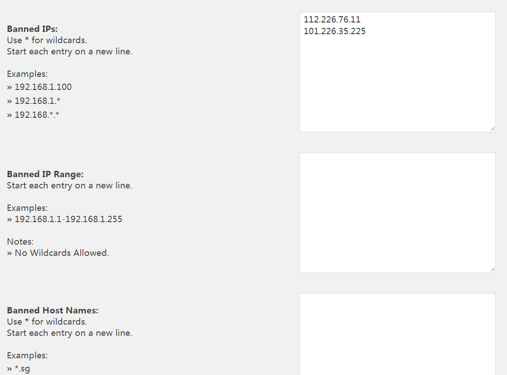
Akismet Anti-Spam （防垃圾评论插件）
WordPress自带的评论过滤插件，可以防止机器人灌水、放外链，非常强大。
个人用户是可以免费使用的，在官方页面获取时拖动价格条到最左边即可，如下图：
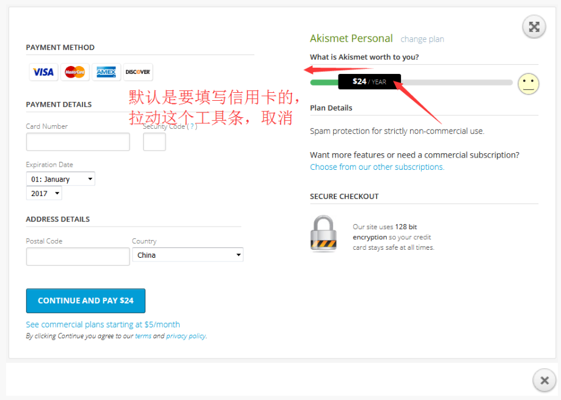
WP Super Cache （静态页面缓存）
此插件的作用是生成静态页面缓存，可加速站点访问。
对于一般的站点来说（例如WordPress博客），如果不是刚需，这个插件用于缓存加速是够用的，方便且暴力。
Redis Object Cache （Redis动态对象缓存）
此插件的作用是生成动态对象缓存，可加速站点访问。
相比静态缓存的部署要复杂，主要适用于那些经常需要动用数据库查询的站点（例如WordPress论坛）。具体部署方法可参看《加速访问WordPress：Redis部署笔记》。
Baidu Sitemap Generator （百度站点地图生成器）
每个站点都必备一个站点地图Sitemap，有站点地图会更容易被搜索引擎收录站点内容（当然robots.txt协议文件也很重要）。
可以生成站点地图的插件很多，但是如果是中文站点，推荐还是使用百度，毕竟百度是全球最大的中文搜索引擎，使用此插件更易于被百度蜘蛛收录。
特色：
- ① 支持生成xml格式站点地图
- ② 支持生成html格式站点地图
- ③ 随着站点更新，可以同步生成站点地图
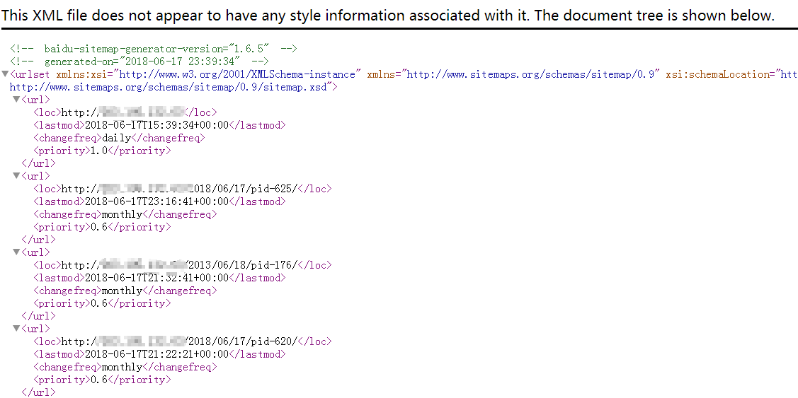
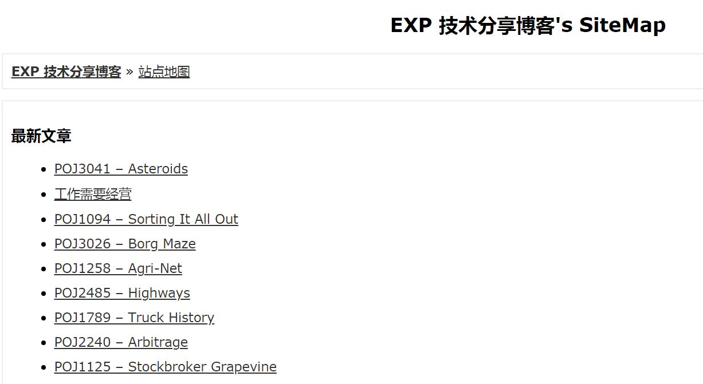
Baidu Links Submit （百度链接提交插件）
相对站点地图Sitemap的被动收录而言，此插件可以主动向百度实时提交网站的新链接，使其被百度搜索引擎及时收录，需注册 百度站长平台 配合使用。
插件最初来源于 百度站长论坛，但是因为原版主在2015年已停更，后来百度站长平台又升级了、加之插件本身也有几个BUG，最后导致无法使用了。
鉴于我比较喜欢这个插件的风格，因此我把2015版本的BUG修正后，重新发布了这个2018修正版：
该插件的原理其实就是封装了 “百度站长平台->链接提交->自动提交->主动推送（实时）” 的功能。因此使用了此插件后，原本用于主动实时提交到百度的其他类似功能的插件或JS代码就要删掉了，避免二次提交导致百度翻脸。
使用方法请参看《WP插件：Baidu Links Submit - 实时推送站点链接到百度》
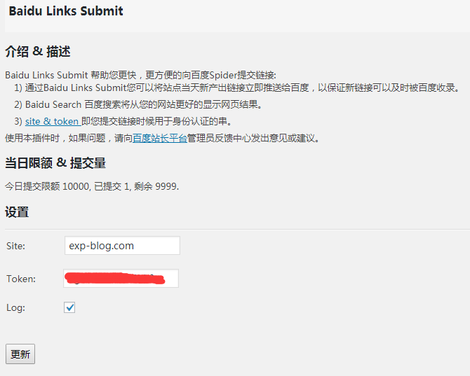
WP Content Copy Protection & No Right Click （文章保护插件）
如果你的站点不希望被别人随意复制内容，那么这个插件就很有用了。不过这个插件会对读者很不友好，需要慎用。
特色：
- ① JavaScript保护
- ② CSS保护
- ③ 主页保护
- ④ 静态页面保护
- ⑤ 禁止右键功能（避免右键复制）
- ⑥ 禁止内容选择（避免快捷键复制）
- ⑦ 自定义禁止提示语
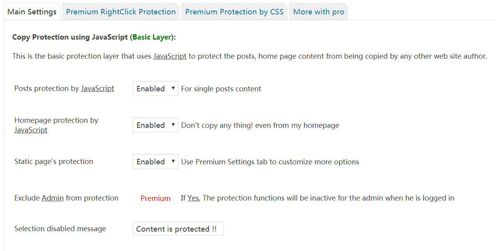
Auto Add Copyright （自动追加站点版权插件）
这是本站出品的一个插件，相比于前一个插件（WP Content Copy Protection & No Right Click），这个插件的做法则温和得多，对读者也更友好。
特色：
- ① 当读者试图复制站点内容时，会自动在复制内容末尾追加站点版权信息
- ② 可设置允许读者复制的内容长度，小于这个长度不会触发追加机制
- ③ 可设置本插件的生效范围：全站、或仅文章页面
- ④ 支持大部分主流浏览器
- ⑤ 复制内容支持纯文本、代码等，不会造成复制内容格式变形
此插件的详细介绍可见《WP插件：Auto Add Copyright – 被复制时自动追加版权链接》。
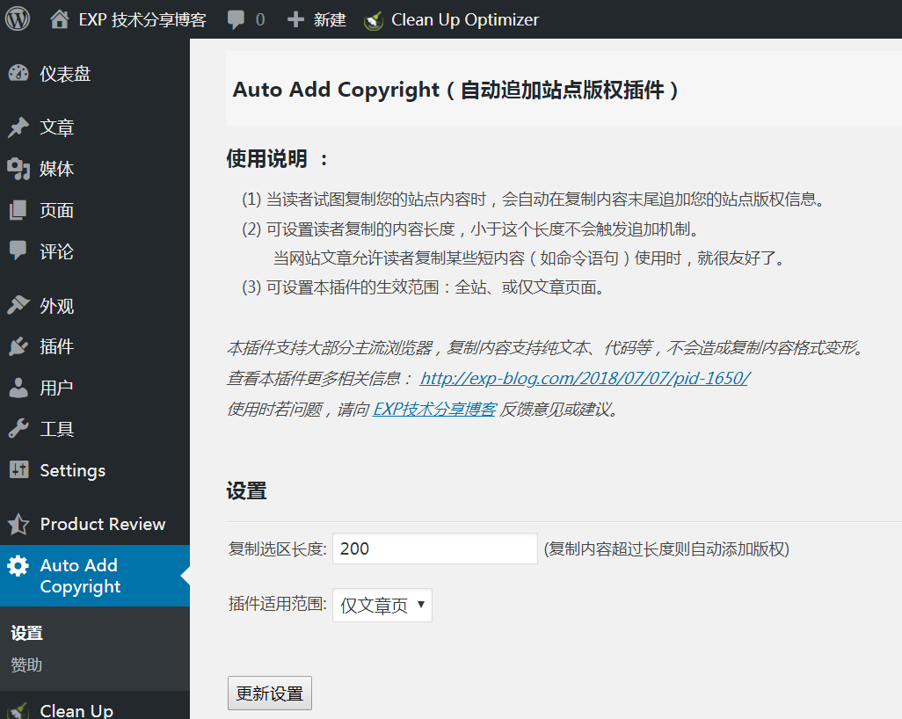
Insert Post Ads （文章内页广告插件）
可以自由定制在文章首部、尾部、中间某个段落后插入一个或多个广告，解决了在编写文章时去才能在文章中间插入广告的问题。
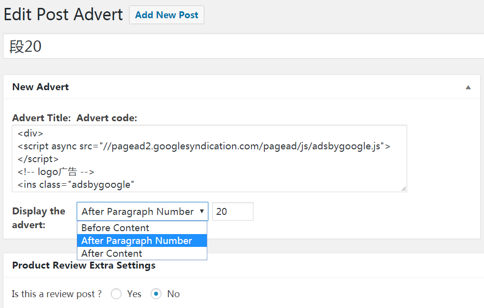